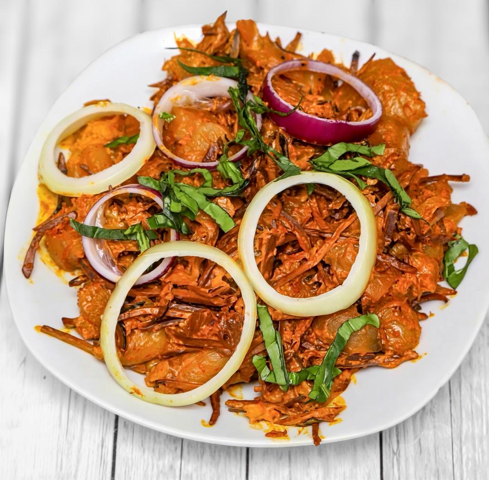

Fried Plantain
Traditional ripe plantains, fried until beautifully crispy with a golden exterior and a soft, naturally sweet centre. A classic African and Caribbean favourite, served as the perfect side to any meal.
£5.99
Traditional ripe plantains, fried until beautifully crispy with a golden exterior and a soft, naturally sweet centre. A classic African and Caribbean favourite, served as the perfect side to any meal.
£5.99

Crispy egg-battered yam slices served with flavorful tomato and pepper sauce. Contains egg.
£11.99

A traditional African delicious soup prepared with grounded African melon (egusi) seeds and some traditional spices, fresh vegetable leaves and assorted meat and fishes.
£17.99

Fish pepper soup made with fresh cat fish, simmered in special African traditional hot spices, herbs and peppers. Bold, warming and satisfying. Served hot and perfect as a hearty starter or main dish. Contains fish.
£17.99

Fried vegetable rice made with fresh mixed vegetables, onions and special spices. This can be served with optional protein add on of grilled chicken, Turkey, hake fish or mackerel.
£11.99

Authentic Nigerian party-style jollof rice, slow-cooked in a flavorful tomato, pepper sauce and aromatic spices with a delightful smoky finish. Rich, bold, and irresistibly delicious.
£12.99

Authentic Nigerian party-style jollof rice, slow-cooked in a flavorful tomato, pepper sauce and aromatic spices with a delightful smoky finish. Rich, bold, and irresistibly delicious. This can be served with optional add-ons like beef, chicken, fish, plantain and moimoi or coleslaw. Contains Fish
£9.99

A tasty delicious Nigerian style meat pie made with beef, carrot and spiced with special African spices. Sold as one piece.
£2.99


A delightful combo of abacha, grilled fish and nkwobi. Offering a taste of spicy traditional African vegetable salad. Contains Fish.
£17.99

A traditional African delicious soup cooked with special traditional aromatic spices, peppers and fresh vegetable leaves, prepared with assorted meat and fishes.
£17.99

A traditional delicious soup rich with tender okro, fresh vegetable leaves and aromatic traditional spices prepared with assorted meat and fishes.
£17.99

Tender chicken stewed to perfection, offering a comforting and savory experience.
£7.99


Grilled medium tilapia fish richly garnished with onion, ginger, garlic and special spices. This is served with a choice of fried yam, fried plantain or potato fries. Contains Fish
£29.99

Boiled or fried yam served with delicious tomato stew prepared with fresh tomatoes and special spices.
£11.99
Ready when you are